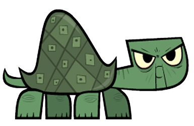

<!DOCTYPE html>
<html lang="en">
<head>
    <meta charset="UTF-8">
    <meta name="viewport" content="width=device-width, initial-scale=1.0">
    <meta http-equiv="X-UA-Compatible" content="ie=edge">
    <title>Animations</title>
    <style>
        html, body {
            height: 100%;
            width: 100%;
            margin: 0;
            position: relative;
        }

        section {
            height: 100vh;
            width: 100vw;
        }

        div {
            position: relative;
            height: 100px;
            width: 100px;
            background-color: #333;
            /* animation-name: move-adv; */
            animation-duration: 5s;
            animation-iteration-count: infinite;
            /* animation-delay: 2s; */
            /* margin: 0 auto; */
            transition: all 0.15s;
        }
            /* Standard syntax */
            @keyframes shakeit {
                25% {left: -50px;}
                37.5% {left: 50px;}
                40% {left: -100px;}
                60% {left: 100px;}
                75% {left: -50px;}
                100% {left: 50px;}
                
            } 

         /* Chrome, Safari, Opera */
            @-webkit-keyframes shakeit {
                12.5% {left: -50px;}
                25% {left: 50px;}
                37.5% {left: -25px;}
                50% {left: 25px;}
                62.5% {left: -10px;}
                75% {left: 10px;}
            }
  

        img {
            height: 100px;
            position: relative;
            /* animation-name: move-simple;  */
            animation-name: move-adv;
            animation-duration: 5s;
            animation-timing-function:step-start;
            animation-delay: 1s;
            animation-iteration-count:1;
            /* animation-direction:reverse; */
            transition: all 0.15s;

        } 
         @keyframes move-simple{
            from {left: 0; top: 0}
            to {left: calc(100% - 155px); top: calc(100% - 100px)}
        } 

        @keyframes move-adv{
            0% {left: 0; top: 0;}
            12.5% {left: 12.5%; top: 12.5%;}
            25% {left: 25%; top: 25%;}
            37.5% {left: 37.5%; top: 37.5%;}
            50% {left: 50%; top: 50%;}
            62.5% {left: 62.5%; top: 37.5%;}
            75% {left: 75%; top: 25%;}
            100% {left: calc(100% - 155px); top: 0;}
        }

        .animation {
            height: 30px;
            width: 30px;
            background-color: tomato;
            animation-name: inclass-2;
            animation-duration: 3s;
            animation-iteration-count: infinite;
        }


        @keyframes inclass {
            from { top: 0; left: 0; transform:rotate(0deg)}
            to { top: 0; left: calc(100% - 30px); transform:rotate(360deg)}
        }

        @keyframes inclass-2{
            0% {left: 0; top: 0; transform:rotate(180deg)}
            25% {top: 0; left: calc(100% - 30px); transform:rotate(45deg)}
            50% {left: calc(100% - 30px); top: calc(100% - 30px); transform:rotate(90deg) }
            100% {left: 0; top: calc(100% - 30px); transform:rotate(180deg)}
        }
    </style>
</head>
<body>
     <!-- <div></div>
    <section>
         
    </section>  -->

    <div class="animation">
    </div>
</body>
</html>